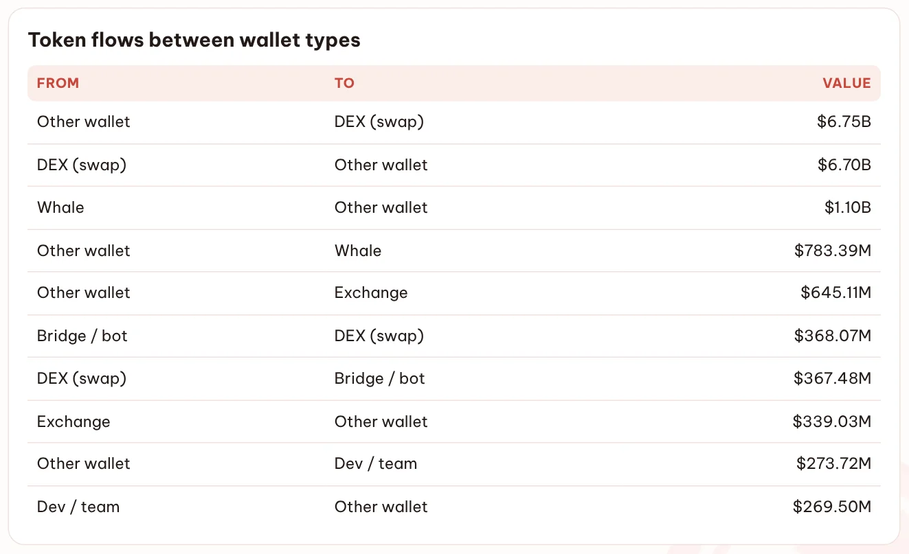
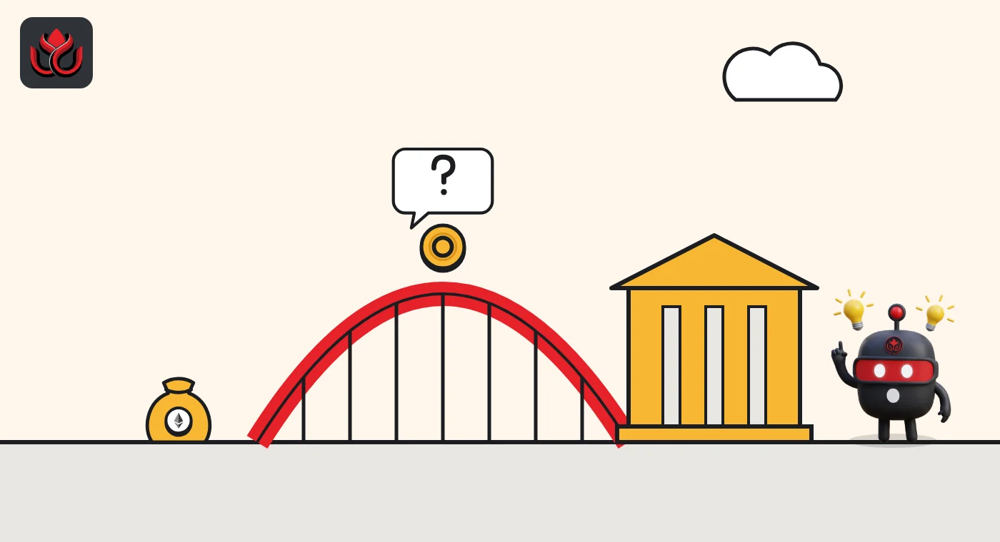

Whales sent out $317 million more than they took in last week. Where did it go?
DeepSea's wallet-to-wallet map shows $1.10 billion leaving whale wallets and $783 million coming back, while unlabeled wallets pushed a net $306 million into exchanges.
Key points
- Whale wallets sent $1.10 billion to unlabeled wallets from October 26 to November 1 and received $783.39 million back, DeepSea shows.
- Unlabeled wallets sent $645.11 million to exchanges and got $339.03 million out, a net of about $306 million toward exchanges.
- Swaps on decentralized exchanges were the biggest flow by far: $6.75 billion in and $6.70 billion out.
 What DeepSea's data shows
What DeepSea's data shows
DeepSea's weekly report sorts token transfers by the type of wallet on each side: whales, exchanges, DEXs (decentralized exchanges, where users swap tokens through smart contracts), bridges and bots, developer or team wallets, and "other wallets," meaning wallets without a DeepSea label.
The biggest flows were swaps: $6.75 billion went from other wallets into DEXs and $6.70 billion came back. Next came whales: $1.10 billion left whale wallets for other wallets, while $783.39 million went the other way. That leaves whales about $317 million net senders.

Data: DeepSea (desea.io), checked November 4, 2026, 12:40 a.m. ET.
The flows, side by side
Other wallets sent $645.11 million to exchanges and received $339.03 million, so about $306 million net went toward exchanges. Flows between bridges and bots and DEXs were almost even ($368.07 million one way, $367.48 million the other). Developer and team wallets received $273.72 million and sent $269.50 million, close to flat.
Token flows between wallet types
US$ million
October 26 to November 1, 2026. DEX swap flows ($6.75B and $6.70B) left out for scale. Source: DeepSea weekly report.
What we do not know
The whale money and the exchange money may be linked: a whale can send tokens to a fresh wallet, which then deposits them. But DeepSea's table shows totals by wallet type, not the path of each coin, so that link is not proven. The data also does not say which tokens moved, who owns the wallets or why.
For context, the same report counted 7,016 exchange transfers of $1 million or more this week, and 96% of their value was stablecoins. So large exchange moves were mostly dollar tokens, though the report does not break down the whale flows by token.

Why it matters
When big holders send more than they receive, they may be spreading funds across new wallets, paying counterparties or getting ready to sell. Exchange deposits often come before a sale, which is why the net $306 million into exchanges is worth watching.
Still, the same report logged 13 whale accumulation signals against 9 distribution signals, so the outflow did not come with a wave of whale selling flags.
LC Insight analysis
This section is our reading of the facts above, not a statement of fact.
- We think the whale outflow is a yellow flag, not a red one. A net $317 million is small next to the $13.45 billion of DEX swap flows in the same week.
- The flat developer and team flows are mildly reassuring: DeepSea flagged team selling in only four tokens, and teams received about as much as they sent.
- If next week shows whales sending out more again and exchange deposits rising, that would point more clearly to selling.
What's next
- Whale outflows in next week's DeepSea report
- Net deposits from unlabeled wallets into exchanges
- Which tokens DeepSea flags for team selling
Disclaimer. This article is based on public information and the sources listed below as of the update time shown. It is for information only and is not investment, legal or tax advice. Figures may change as companies and authorities publish new data.
Sources
- DeepSea, Weekly Smart Money & Global Money Flows Report, October 26 to November 1, 2026 (Where the money moved: token flows between wallet types; read November 4, 2026, 12:40 a.m. ET)
- DeepSea, Weekly Smart Money & Global Money Flows Report, October 26 to November 1, 2026 (Smart money behavior section; read November 4, 2026, 12:40 a.m. ET)